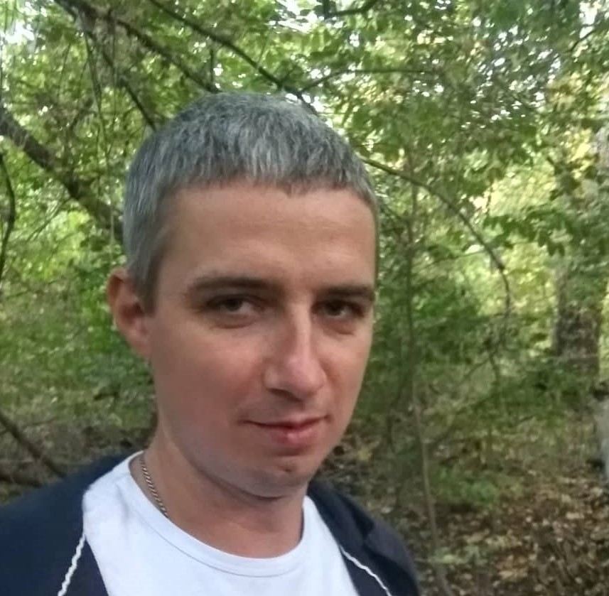

Resume CNC Technologist
Romanenko Kirill

Desired position: CNC technologist
Desired salary: 20000 UAH
Date of birth: 14.09.1987
Accommodation: Chernihiv
Contact Information:
tel. 0631515820
Email: kirill_777@ukr.net
Facebook
Basic Skills:
- Selection of tools for processing parts;
- Writing a technical project and a setup card;
- Creation of control programs for the CNC machine;
Work experience:
2008-2010 CNC operator on Chernihiv Forge Plant
Field of activity of the company: development and creation of hot pressing dies.
Responsibility:
- Adjustment of the machine with CNC;
- Production control of the part;
- Quality control of the manufactured part;
- Process adjustment;
2010-2019 CNC Technologist at TOV Promservice
Field of activity of the company: development and manufacture of preforms and stamps.
Responsibility:
- Development of a technical process and a setup map for a CNC machine;
- Writing control programs for a CNC machine;
- Quality control of the manufactured part;
- Process adjustment;
Education:
Chernihiv National Pedagogical University named after Taras Shevchenko. Department of Physics and Informatics